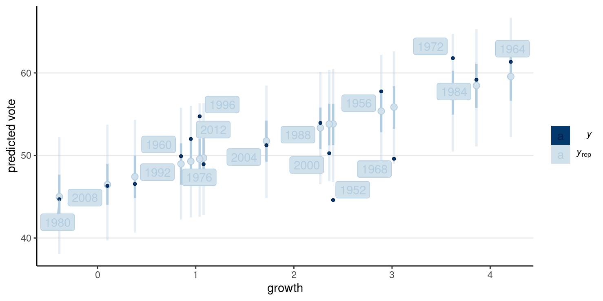
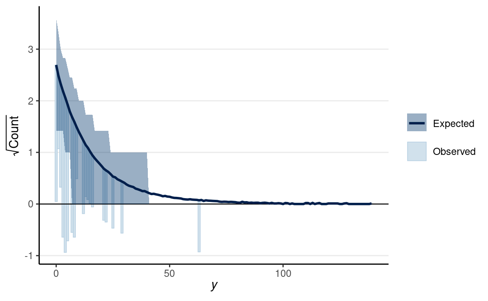

library(tidyverse)
library(here) # for easier management of file paths
library(rstan)
rstan_options(auto_write = TRUE) # save compiled Stan object
library(brms) # simplify fitting Stan GLM models
library(shinystan) # graphical exploration
library(posterior) # for summarizing draws
library(bayesplot) # for plotting
library(modelsummary) # table for brms
theme_set(theme_classic() +
theme(panel.grid.major.y = element_line(color = "grey92")))
GLM (generalized linear model) is a general class of statistical models for predicting an outcome variable, \(Y\). It accommodates \(Y\) in different types of measurement, such as continuous, counts, ordinal, or categorical. GLM is a generalization of the usual regression model that assumes linear associations and normally distributed errors.
Regression is a class of statistical techniques to understand the relationship between an outcome variable (also called a criterion/response/dependent variable) and one or more predictor variables (also called explanatory/independent variables). For example, if we have the following scatter plot between two variables (\(Y\) and \(X\)):
We want to find some pattern from this relationship. In conventional regression, we model the conditional distribution of \(Y\) given \(X\), \(P(Y \mid X)\), by separating the outcome variable \(Y\) into (a) a systematic component that depends on the predictor, and (b) a random/probabilistic component that does not depend on the predictor. For example, we can start with a systematic component which only depends on the predictor:
As you can see, all the red dots fall exactly on the curve in the graph above, meaning that as long as one knows the \(X\) value, one can predict the \(Y\) value with 100% accuracy. We can thus write \(Y^* = f(X)\) (where \(Y^*\) is the systematic component of \(Y\)).
However, in almost all scientific inquiries, one can never predict with 100% certainty (e.g., there are measurement errors and college randomness in physics). The uncertainty stems from the fact that we rarely measure all the factors that determine \(Y\), and there are genuinely random things (as in quantum physics). Therefore, we need to expand our model to incorporate this randomness, by adding a probabilistic component. Therefore, instead of saying that \(Y\) depends just on \(X\), we say \(Y\) is random, but the information about \(X\) provides information about how \(Y\) is distributed. In regression, one studies the conditional distribution \(P(Y \mid X)\) such that the conditional expectation, \(E(Y \mid X)\), is determined by \(X\); on top of the conditional expectation, we assume that the observed \(Y\) values scatter around the conditional expectations, like the graph on the left below:
p1 <- ggplot(df, aes(x, yhat)) +
stat_function(fun = function(x) 0.7 + 0.5 * log(x - 1), n = 501) +
geom_point(col = "red") +
xlim(1, 5) +
ylim(-1, 2) +
ylab("y") +
geom_curve(aes(x = x, y = yhat + 0.5, xend = x, yend = yhat - 0.5),
curvature = -0.4, col = "red", linetype = "dotdash"
) +
geom_vline(aes(xintercept = x), linetype = "dotted") +
geom_point(aes(x, y), size = 2)
p2 <- ggplot(df, aes(x, y)) +
geom_point(size = 2) +
xlim(1, 5) +
ylim(-1, 2)
gridExtra::grid.arrange(p1, p2, nrow = 1)
We can write the systematic part as:
\[E(Y \mid X) = f(X; \beta_1, \beta_2, \ldots), \]
where \(\beta_1\), \(\beta_2\), \(\ldots\) are the parameters for some arbitrary function \(f(\cdot)\). The random part is about \(P(Y \mid X)\), which can take some arbitrary form of distributions. In reality, even if such a model holds, we do not know what \(f(\cdot)\) and the true distribution of \(Y \mid X\) are, as we only have data like those illustrated in the graph on the right above.
Under the GLM framework, with one predictor, we have models in the form
\[ \begin{aligned} Y_i & \sim \mathrm{Dist}(\mu_i, \tau) \\ g(\mu_i) & = \eta_i \\ \eta_i & = \beta_0 + \beta_1 X_i \end{aligned} \]
A GLM model has three components:
In a GLM, one selects distributions like Dist = Normal, Poisson, Binomial, Bernoulli, etc. The distribution has a mean parameter \(\mu_i\) and may have a dispersion parameter, \(\tau\). An intermediate step in GLM is transforming \(\mu_i\) to \(\eta_i\). \(\eta_i\) is called the linear predictor, which is the linear function of the predictors. In linear models, we directly model the conditional mean, \(\mu_i\), as the same as \(\eta_i\). However, to allow for the possibility of \(\mu_i\) being a nonlinear function of the predictors, in GLM we transform \(\mu_i\) by applying a link function, \(g(\cdot)\), so that, even though we \(\eta_i\) to be linear in the coefficients, \(\mu_i = g^{-1}(\eta_i)\) will be a nonlinear function of the coefficients as long as the link function is not linear. This step is needed to ensure that the predicted values will not be out of range.
The table below includes some commonly used GLMs
| outcome type | Support | Distributions | Link |
|---|---|---|---|
| continuous | [\(-\infty\), \(\infty\)] | Normal | Identity |
| count (fixed duration) | {0, 1, \(\ldots\)} | Poisson | Log |
| count (known # of trials) | {0, 1, \(\ldots\), \(N\)} | Binomial | Logit |
| binary | {0, 1} | Bernoulli | Logit |
| ordinal | {0, 1, \(\ldots\), K} | categorical | Logit |
| nominal | \(K\)-vector of {0, 1} | categorical | Logit |
| multinomial | \(K\)-vector of {0, 1, \(\ldots\), \(K\)} | categorical | Logit |
The linear regression model assumes that
Under these conditions, we have a model
\[ \begin{aligned} Y_i & \sim N(\mu_i, \sigma) \\ \mu_i & = \eta_i \\ \eta_i & = \beta_0 + \beta_1 X_{i} \end{aligned} \]
With parameters: - \(\beta_0\): regression intercept; predicted \(Y\) value for observations with \(X\) = 0 - \(\beta_1\): regression slope/coefficient; predicted difference in \(Y\) for one unit difference in \(X\) - \(\sigma\): standard deviation of prediction error; roughly speaking, the margin of error in prediction
We will use an example based on the bread and peace model by political scientist Douglas Hibbs, which can be used to forecast the U.S. presidential election outcome based on some weighted metric of personal income growth. The example is taken from chapter 7 of the book Regression and Other Stories.
Below is a graph showing the data from 1952 to 2012, with one variable being personal income growth in the four years prior to an election, and the other being the vote share (in %) of the incumbents party.
# Economy and elections data
hibbs <- read.table(
"https://github.com/avehtari/ROS-Examples/raw/master/ElectionsEconomy/data/hibbs.dat",
header = TRUE
)
ggplot(hibbs, aes(x = growth, y = vote, label = year)) +
geom_point() +
ggrepel::geom_text_repel() +
labs(x = "Average recent growth in personal income",
y = "Incumbent party's vote share (%)")
Model:
\[\begin{align} \text{vote}_i & \sim N(\mu_i, \sigma) \\ \mu_i & = \beta_0 + \beta_1 \text{growth}_i \end{align}\]
\(\sigma\): SD (margin) of prediction error
Priors:
\[\begin{align} \beta_0 & \sim N(45, 10) \\ \beta_1 & \sim N(0, 10) \\ \sigma & \sim t^+_4(0, 5) \end{align}\]
Once youve written the model, its straightforward to code the model in Stan to perform MCMC sampling, like the code below.
data {
int<lower=0> N; // number of observations
vector[N] y; // outcome;
vector[N] x; // predictor;
}
parameters {
real beta0; // regression intercept
real beta1; // regression coefficient
real<lower=0> sigma; // SD of prediction error
}
model {
// model
y ~ normal(beta0 + beta1 * x, sigma);
// prior
beta0 ~ normal(45, 10);
beta1 ~ normal(0, 10);
sigma ~ student_t(4, 0, 5);
}
generated quantities {
vector[N] y_rep; // place holder
for (n in 1:N)
y_rep[n] = normal_rng(beta0 + beta1 * x[n], sigma);
}brmsWhile Stan is very flexible, because GLM is so widely used, some
authors have created packages that would further simplify the fitting of
Bayesian GLMs (and some other models). One of those packages is
brms, which I believe stands for Bayesian regression
models with Stan. It allows one to do MCMC sampling using Stan, but
with syntax similar to that in R functions lm(),
glm(), and lme4::lmer(). brms
probably supports more models than any R packages that statisticians
routinely used; there are models, like factor analysis, that are not
directly supported. If you came across some fancy regression models,
chances are you can do something similar in brms. You can
find some resources for learning brms on this page: https://paul-buerkner.github.io/brms/
brms comes with some default prior options, but I
recommend you always check what priors are used and think about whether
they make sense for your data. You can use get_priors() to
show the default priors used in brms.
#> prior class coef group resp dpar nlpar bound
#> (flat) b
#> (flat) b growth
#> student_t(3, 50.8, 6.1) Intercept
#> student_t(3, 0, 6.1) sigma
#> source
#> default
#> (vectorized)
#> default
#> defaultTo do MCMC sampling, we use the brm() function. The
first argument is a formula in R. The variable before ~ is
the outcome, whereas the ones after ~ are the predictors.
For example,
vote ~ 1 + growthmeans the model
\[E(\text{vote}_i) = \beta_0 (1) + \beta_1 (\text{growth}_i).\]
Usually, I write vote ~ 1 + growth as
vote ~ growth, as the 1 + part is
automatically added.
m1_brm <- brm(
# Y (vote) = beta0 + beta1 (growth)
vote ~ growth,
data = hibbs,
# Normal distribution with identity link
family = gaussian(link = "identity"),
# Overwrite the default priors
prior = c(
# prior for beta0
prior(normal(45, 10), class = "Intercept"),
# prior for beta1 (and beta2, ..., if > 1 predictors)
prior(normal(0, 10), class = "b"),
# prior for sigma
prior(student_t(4, 0, 5), class = "sigma")
),
sample_prior = TRUE, # also sample the prior distributions
iter = 4000, # default is 4 chains, 2000 iterations each
seed = 31143
)
#>
#> SAMPLING FOR MODEL 'c5e219d81e0627b524a280eeeb9a9fcc' NOW (CHAIN 1).
#> Chain 1:
#> Chain 1: Gradient evaluation took 1.2e-05 seconds
#> Chain 1: 1000 transitions using 10 leapfrog steps per transition would take 0.12 seconds.
#> Chain 1: Adjust your expectations accordingly!
#> Chain 1:
#> Chain 1:
#> Chain 1: Iteration: 1 / 4000 [ 0%] (Warmup)
#> Chain 1: Iteration: 400 / 4000 [ 10%] (Warmup)
#> Chain 1: Iteration: 800 / 4000 [ 20%] (Warmup)
#> Chain 1: Iteration: 1200 / 4000 [ 30%] (Warmup)
#> Chain 1: Iteration: 1600 / 4000 [ 40%] (Warmup)
#> Chain 1: Iteration: 2000 / 4000 [ 50%] (Warmup)
#> Chain 1: Iteration: 2001 / 4000 [ 50%] (Sampling)
#> Chain 1: Iteration: 2400 / 4000 [ 60%] (Sampling)
#> Chain 1: Iteration: 2800 / 4000 [ 70%] (Sampling)
#> Chain 1: Iteration: 3200 / 4000 [ 80%] (Sampling)
#> Chain 1: Iteration: 3600 / 4000 [ 90%] (Sampling)
#> Chain 1: Iteration: 4000 / 4000 [100%] (Sampling)
#> Chain 1:
#> Chain 1: Elapsed Time: 0.038894 seconds (Warm-up)
#> Chain 1: 0.03669 seconds (Sampling)
#> Chain 1: 0.075584 seconds (Total)
#> Chain 1:
#>
#> SAMPLING FOR MODEL 'c5e219d81e0627b524a280eeeb9a9fcc' NOW (CHAIN 2).
#> Chain 2:
#> Chain 2: Gradient evaluation took 5e-06 seconds
#> Chain 2: 1000 transitions using 10 leapfrog steps per transition would take 0.05 seconds.
#> Chain 2: Adjust your expectations accordingly!
#> Chain 2:
#> Chain 2:
#> Chain 2: Iteration: 1 / 4000 [ 0%] (Warmup)
#> Chain 2: Iteration: 400 / 4000 [ 10%] (Warmup)
#> Chain 2: Iteration: 800 / 4000 [ 20%] (Warmup)
#> Chain 2: Iteration: 1200 / 4000 [ 30%] (Warmup)
#> Chain 2: Iteration: 1600 / 4000 [ 40%] (Warmup)
#> Chain 2: Iteration: 2000 / 4000 [ 50%] (Warmup)
#> Chain 2: Iteration: 2001 / 4000 [ 50%] (Sampling)
#> Chain 2: Iteration: 2400 / 4000 [ 60%] (Sampling)
#> Chain 2: Iteration: 2800 / 4000 [ 70%] (Sampling)
#> Chain 2: Iteration: 3200 / 4000 [ 80%] (Sampling)
#> Chain 2: Iteration: 3600 / 4000 [ 90%] (Sampling)
#> Chain 2: Iteration: 4000 / 4000 [100%] (Sampling)
#> Chain 2:
#> Chain 2: Elapsed Time: 0.038267 seconds (Warm-up)
#> Chain 2: 0.03965 seconds (Sampling)
#> Chain 2: 0.077917 seconds (Total)
#> Chain 2:
#>
#> SAMPLING FOR MODEL 'c5e219d81e0627b524a280eeeb9a9fcc' NOW (CHAIN 3).
#> Chain 3:
#> Chain 3: Gradient evaluation took 6e-06 seconds
#> Chain 3: 1000 transitions using 10 leapfrog steps per transition would take 0.06 seconds.
#> Chain 3: Adjust your expectations accordingly!
#> Chain 3:
#> Chain 3:
#> Chain 3: Iteration: 1 / 4000 [ 0%] (Warmup)
#> Chain 3: Iteration: 400 / 4000 [ 10%] (Warmup)
#> Chain 3: Iteration: 800 / 4000 [ 20%] (Warmup)
#> Chain 3: Iteration: 1200 / 4000 [ 30%] (Warmup)
#> Chain 3: Iteration: 1600 / 4000 [ 40%] (Warmup)
#> Chain 3: Iteration: 2000 / 4000 [ 50%] (Warmup)
#> Chain 3: Iteration: 2001 / 4000 [ 50%] (Sampling)
#> Chain 3: Iteration: 2400 / 4000 [ 60%] (Sampling)
#> Chain 3: Iteration: 2800 / 4000 [ 70%] (Sampling)
#> Chain 3: Iteration: 3200 / 4000 [ 80%] (Sampling)
#> Chain 3: Iteration: 3600 / 4000 [ 90%] (Sampling)
#> Chain 3: Iteration: 4000 / 4000 [100%] (Sampling)
#> Chain 3:
#> Chain 3: Elapsed Time: 0.037998 seconds (Warm-up)
#> Chain 3: 0.036131 seconds (Sampling)
#> Chain 3: 0.074129 seconds (Total)
#> Chain 3:
#>
#> SAMPLING FOR MODEL 'c5e219d81e0627b524a280eeeb9a9fcc' NOW (CHAIN 4).
#> Chain 4:
#> Chain 4: Gradient evaluation took 5e-06 seconds
#> Chain 4: 1000 transitions using 10 leapfrog steps per transition would take 0.05 seconds.
#> Chain 4: Adjust your expectations accordingly!
#> Chain 4:
#> Chain 4:
#> Chain 4: Iteration: 1 / 4000 [ 0%] (Warmup)
#> Chain 4: Iteration: 400 / 4000 [ 10%] (Warmup)
#> Chain 4: Iteration: 800 / 4000 [ 20%] (Warmup)
#> Chain 4: Iteration: 1200 / 4000 [ 30%] (Warmup)
#> Chain 4: Iteration: 1600 / 4000 [ 40%] (Warmup)
#> Chain 4: Iteration: 2000 / 4000 [ 50%] (Warmup)
#> Chain 4: Iteration: 2001 / 4000 [ 50%] (Sampling)
#> Chain 4: Iteration: 2400 / 4000 [ 60%] (Sampling)
#> Chain 4: Iteration: 2800 / 4000 [ 70%] (Sampling)
#> Chain 4: Iteration: 3200 / 4000 [ 80%] (Sampling)
#> Chain 4: Iteration: 3600 / 4000 [ 90%] (Sampling)
#> Chain 4: Iteration: 4000 / 4000 [100%] (Sampling)
#> Chain 4:
#> Chain 4: Elapsed Time: 0.038348 seconds (Warm-up)
#> Chain 4: 0.041164 seconds (Sampling)
#> Chain 4: 0.079512 seconds (Total)
#> Chain 4:You can print the results
print(m1_brm, digits = 2) # `digits = 2` is default
#> Family: gaussian
#> Links: mu = identity; sigma = identity
#> Formula: vote ~ growth
#> Data: hibbs (Number of observations: 16)
#> Draws: 4 chains, each with iter = 4000; warmup = 2000; thin = 1;
#> total post-warmup draws = 8000
#>
#> Population-Level Effects:
#> Estimate Est.Error l-95% CI u-95% CI Rhat Bulk_ESS Tail_ESS
#> Intercept 46.18 1.75 42.69 49.65 1.00 6349 4916
#> growth 3.05 0.75 1.58 4.56 1.00 6209 4702
#>
#> Family Specific Parameters:
#> Estimate Est.Error l-95% CI u-95% CI Rhat Bulk_ESS Tail_ESS
#> sigma 4.01 0.82 2.79 5.93 1.00 5192 4789
#>
#> Draws were sampled using sampling(NUTS). For each parameter, Bulk_ESS
#> and Tail_ESS are effective sample size measures, and Rhat is the potential
#> scale reduction factor on split chains (at convergence, Rhat = 1).The coefficients under Population-Level Effects are the
\(\beta\)s, and those under
Family Specific Parameters are the \(\tau\)s (scale parameters). The one labeled
Intercept is \(\beta_0\),
and the one labeled growth is the coefficient for the
growth predictor, which is \(\beta_1\).
Heres a paragraph for the results:
The model predicts that when personal income growth is 0, the vote share for the incumbent party is 46.18%, 90% CI [43.31%, 49.04%]. A 1 unit difference in personal income growth corresponds to a difference in vote share by 3.05 precentage points, 90% CI [1.82, 4.28].
mcmc_trace(m1_brm,
pars = c("b_Intercept", "b_growth", "sigma"))
mcmc_rank_hist(m1_brm,
pars = c("b_Intercept", "b_growth", "sigma"))
There are many ways to visualize the results of a regression model. The most important thing is to be as familiar with what the results mean as possible. Statistics is not some magic that gives you some numbers that either support or do not support your theory or hypothesis. It is a way to describe your data. If you do not want to do the work to understand what your data tell you, why bother to collect the data in the first place?
Posterior distributions of the three parameters
You can also combine the density plot and the trace plot
plot(m1_brm)
The plot below shows the 50% and 90% prediction intervals based on the posterior samples and the model. For example, with the 90% intervals, one expects 90% of the data should be within those intervals. If you see many data points lying outside the intervals, the linear model is not a good fit.
pp_check(
m1_brm,
type = "intervals",
x = "growth"
) +
labs(x = "growth", y = "predicted vote") +
ggrepel::geom_label_repel(
aes(y = hibbs$vote, label = hibbs$year)
)
h_growth <- hypothesis(m1_brm,
hypothesis = c("growth = 0")
)
plot(h_growth)
You can use the modelsummary::msummary() function to get
a nicely formatted table of GLM coefficients. Well talk about things
like ELPD, LOOIC, and WAIC later in the course.
msummary(m1_brm, statistic = "conf.int", fmt = 2)
| Model 1 | |
|---|---|
| b_Intercept | 46.20 |
| [42.78, 49.71] | |
| b_growth | 3.05 |
| [1.55, 4.52] | |
| sigma | 3.88 |
| [2.64, 5.65] | |
| Num.Obs. | 16 |
| ELPD | 46.4 |
| ELPD s.e. | 3.8 |
| LOOIC | 92.9 |
| LOOIC s.e. | 7.6 |
| WAIC | 92.3 |
| RMSE | 3.52 |
In the four years before 2016, the weighted average personal income growth was 2.0 (based on Hibbs calculation). So based on the model, we can obtain a posterior distribution for the predicted vote share of the Democratic Party, which is the incumbent party prior to the 2016 presidential election.
pp_growth_eq_2 <- posterior_predict(m1_brm,
newdata = list(growth = 2)
)
colnames(pp_growth_eq_2) <- "y_tilde"
mcmc_dens(pp_growth_eq_2)
The probability of incumbents vote share > 50% with average income growth = 2 is 0.719375. The actual outcome of the election was that the Democratic Party received about 51.1% of the votes among the two parties, so it was below the model prediction but within the range of possible outcomes. Of course, we know that the actual election outcome is based on the electoral college, not the majority vote.
m1_robust <- brm(vote ~ growth,
data = hibbs,
family = student(link = "identity"),
prior = c(
prior(normal(45, 10), class = "Intercept"),
prior(normal(0, 10), class = "b"),
prior(student_t(4, 0, 5), class = "sigma"),
prior(gamma(2, 0.1), class = "nu")
),
sample_prior = TRUE,
iter = 4000,
seed = 31143
)
#>
#> SAMPLING FOR MODEL '2c7d149b9ab4ebcb5b7c52747ae84e15' NOW (CHAIN 1).
#> Chain 1:
#> Chain 1: Gradient evaluation took 3.9e-05 seconds
#> Chain 1: 1000 transitions using 10 leapfrog steps per transition would take 0.39 seconds.
#> Chain 1: Adjust your expectations accordingly!
#> Chain 1:
#> Chain 1:
#> Chain 1: Iteration: 1 / 4000 [ 0%] (Warmup)
#> Chain 1: Iteration: 400 / 4000 [ 10%] (Warmup)
#> Chain 1: Iteration: 800 / 4000 [ 20%] (Warmup)
#> Chain 1: Iteration: 1200 / 4000 [ 30%] (Warmup)
#> Chain 1: Iteration: 1600 / 4000 [ 40%] (Warmup)
#> Chain 1: Iteration: 2000 / 4000 [ 50%] (Warmup)
#> Chain 1: Iteration: 2001 / 4000 [ 50%] (Sampling)
#> Chain 1: Iteration: 2400 / 4000 [ 60%] (Sampling)
#> Chain 1: Iteration: 2800 / 4000 [ 70%] (Sampling)
#> Chain 1: Iteration: 3200 / 4000 [ 80%] (Sampling)
#> Chain 1: Iteration: 3600 / 4000 [ 90%] (Sampling)
#> Chain 1: Iteration: 4000 / 4000 [100%] (Sampling)
#> Chain 1:
#> Chain 1: Elapsed Time: 0.081374 seconds (Warm-up)
#> Chain 1: 0.07023 seconds (Sampling)
#> Chain 1: 0.151604 seconds (Total)
#> Chain 1:
#>
#> SAMPLING FOR MODEL '2c7d149b9ab4ebcb5b7c52747ae84e15' NOW (CHAIN 2).
#> Chain 2:
#> Chain 2: Gradient evaluation took 1e-05 seconds
#> Chain 2: 1000 transitions using 10 leapfrog steps per transition would take 0.1 seconds.
#> Chain 2: Adjust your expectations accordingly!
#> Chain 2:
#> Chain 2:
#> Chain 2: Iteration: 1 / 4000 [ 0%] (Warmup)
#> Chain 2: Iteration: 400 / 4000 [ 10%] (Warmup)
#> Chain 2: Iteration: 800 / 4000 [ 20%] (Warmup)
#> Chain 2: Iteration: 1200 / 4000 [ 30%] (Warmup)
#> Chain 2: Iteration: 1600 / 4000 [ 40%] (Warmup)
#> Chain 2: Iteration: 2000 / 4000 [ 50%] (Warmup)
#> Chain 2: Iteration: 2001 / 4000 [ 50%] (Sampling)
#> Chain 2: Iteration: 2400 / 4000 [ 60%] (Sampling)
#> Chain 2: Iteration: 2800 / 4000 [ 70%] (Sampling)
#> Chain 2: Iteration: 3200 / 4000 [ 80%] (Sampling)
#> Chain 2: Iteration: 3600 / 4000 [ 90%] (Sampling)
#> Chain 2: Iteration: 4000 / 4000 [100%] (Sampling)
#> Chain 2:
#> Chain 2: Elapsed Time: 0.071052 seconds (Warm-up)
#> Chain 2: 0.072253 seconds (Sampling)
#> Chain 2: 0.143305 seconds (Total)
#> Chain 2:
#>
#> SAMPLING FOR MODEL '2c7d149b9ab4ebcb5b7c52747ae84e15' NOW (CHAIN 3).
#> Chain 3:
#> Chain 3: Gradient evaluation took 1.2e-05 seconds
#> Chain 3: 1000 transitions using 10 leapfrog steps per transition would take 0.12 seconds.
#> Chain 3: Adjust your expectations accordingly!
#> Chain 3:
#> Chain 3:
#> Chain 3: Iteration: 1 / 4000 [ 0%] (Warmup)
#> Chain 3: Iteration: 400 / 4000 [ 10%] (Warmup)
#> Chain 3: Iteration: 800 / 4000 [ 20%] (Warmup)
#> Chain 3: Iteration: 1200 / 4000 [ 30%] (Warmup)
#> Chain 3: Iteration: 1600 / 4000 [ 40%] (Warmup)
#> Chain 3: Iteration: 2000 / 4000 [ 50%] (Warmup)
#> Chain 3: Iteration: 2001 / 4000 [ 50%] (Sampling)
#> Chain 3: Iteration: 2400 / 4000 [ 60%] (Sampling)
#> Chain 3: Iteration: 2800 / 4000 [ 70%] (Sampling)
#> Chain 3: Iteration: 3200 / 4000 [ 80%] (Sampling)
#> Chain 3: Iteration: 3600 / 4000 [ 90%] (Sampling)
#> Chain 3: Iteration: 4000 / 4000 [100%] (Sampling)
#> Chain 3:
#> Chain 3: Elapsed Time: 0.068307 seconds (Warm-up)
#> Chain 3: 0.075743 seconds (Sampling)
#> Chain 3: 0.14405 seconds (Total)
#> Chain 3:
#>
#> SAMPLING FOR MODEL '2c7d149b9ab4ebcb5b7c52747ae84e15' NOW (CHAIN 4).
#> Chain 4:
#> Chain 4: Gradient evaluation took 1.2e-05 seconds
#> Chain 4: 1000 transitions using 10 leapfrog steps per transition would take 0.12 seconds.
#> Chain 4: Adjust your expectations accordingly!
#> Chain 4:
#> Chain 4:
#> Chain 4: Iteration: 1 / 4000 [ 0%] (Warmup)
#> Chain 4: Iteration: 400 / 4000 [ 10%] (Warmup)
#> Chain 4: Iteration: 800 / 4000 [ 20%] (Warmup)
#> Chain 4: Iteration: 1200 / 4000 [ 30%] (Warmup)
#> Chain 4: Iteration: 1600 / 4000 [ 40%] (Warmup)
#> Chain 4: Iteration: 2000 / 4000 [ 50%] (Warmup)
#> Chain 4: Iteration: 2001 / 4000 [ 50%] (Sampling)
#> Chain 4: Iteration: 2400 / 4000 [ 60%] (Sampling)
#> Chain 4: Iteration: 2800 / 4000 [ 70%] (Sampling)
#> Chain 4: Iteration: 3200 / 4000 [ 80%] (Sampling)
#> Chain 4: Iteration: 3600 / 4000 [ 90%] (Sampling)
#> Chain 4: Iteration: 4000 / 4000 [100%] (Sampling)
#> Chain 4:
#> Chain 4: Elapsed Time: 0.073519 seconds (Warm-up)
#> Chain 4: 0.075944 seconds (Sampling)
#> Chain 4: 0.149463 seconds (Total)
#> Chain 4:pp_check(
m1_robust,
type = "intervals",
x = "growth"
) +
labs(x = "growth", y = "predicted vote") +
ggrepel::geom_label_repel(
aes(y = hibbs$vote, label = hibbs$year)
)

The Poisson GLM is used to model count outcomes. Count outcomes are non-negative discrete integers. Remember, with GLM, we are modeling the mean of the outcome, \(\mu\). Therefore, we need to make sure \(\mu\) is non-negative, so we need a link function that can map \(\eta\) from the whole real line to non-negative numbers; by far, the most commonly used link function is the logarithmic transformation, \(g(\mu) = \log(\mu)\).
Heres an example data set recording effect of anticonvulsant therapy in epilepsy. The outcome variable is the number of seizures in the two-week window prior to the last of the four visits.
First check the distribution of the counts:
And the box plots
set.seed(1417)
ggplot(epilepsy4, aes(x = Trt, y = count)) +
geom_boxplot() +
geom_jitter(width = 0.05)
Model:
\[\begin{align} \text{count}_i & \sim \mathrm{Pois}(\mu_i) \\ \log(\mu_i) & = \eta_i \\ \eta_i & = \beta_0 + \beta_1 \text{Trt}_{i} \end{align}\]
Priors:
\[\begin{align} \beta_0 & \sim N(3, 2.5) \\ \beta_1 & \sim N(0, 1) \end{align}\]
Predicted seizure rate = \(\exp(\beta_0 + \beta_1) = \exp(\beta_0) \exp(\beta_1)\) for Trt = 1; \(\exp(\beta_0)\) for Trt = 0
\(\beta_1\) = mean difference in log rate of seizure; \(\exp(\beta_1)\) = ratio in rate of seizure
brmsBecause of the nonlinear link function, one needs to be careful in interpreting the coefficients. With the log link, it is common to obtain the exponentiated coefficient. With the exponentiated coefficient, for every unit difference in \(X\), the predicted rate of seizure occurrence is multiplied by \(\exp(\beta_1)\) times. Here is the usual step for obtaining the posterior distributions of the transformed parameters:
m2_summary <- as_draws_array(m2) %>%
mutate_variables(exp_beta0 = exp(b_Intercept),
exp_beta1 = exp(b_Trt1)) %>%
summarize_draws()
So here is a paragraph for the example:
The model predicts that the mean seizure rate in two weeks for the control condition is 7.96, 90% CI [7.1, 8.84]; the exponentiated coefficient for the treatment indicator is 0.85, 90% CI [0.72, 0.99], meaning that on average, the treatment reduces seizure rate by 1.13% to 28.35%.
There is also a useful graphical tool, the rootogram, for diagnosing count models.
pp_check(m2, type = "rootogram", style = "hanging")
If the fit is good, the bars should be close to touching the horizontal x-axis. Thus, the fit was not good in the above figure. Models that accommodate overdispersion and excessive zeros may be needed.
The negative binomial distribution is usually used to handle overdispersion in count data. The idea is that even with the same predictor value, each individual has a different rate of occurrence for an event, which is highly plausible for the epilepsy data. This class will not get into the details of the negative binomial, but you can check out this paper or this book.
m2_nb <- brm(count ~ Trt,
data = epilepsy4,
family = negbinomial(link = "log"),
prior = c(
prior(normal(1, 3), class = "Intercept"),
prior(normal(0, 1), class = "b")
),
iter = 4000,
seed = 31143
)
pp_check(m2_nb, type = "rootogram", style = "hanging")

Well continue with some other models in GLM later in the class. But well discuss regression with multiple predictors and causal thinking first.
#> [1] "March 21, 2022"Strictly speaking, GLM requires distributions that are in the exponential family, which will not include distributions like the \(t\) distribution, but here we will use GLM also to include models that use distributions similar to those in the exponential family, like the Students \(t\) distribution.
If you see mistakes or want to suggest changes, please create an issue on the source repository.
Text and figures are licensed under Creative Commons Attribution CC BY-NC-SA 4.0. Source code is available at https://github.com/marklhc/20221-psyc573-usc, unless otherwise noted. The figures that have been reused from other sources don't fall under this license and can be recognized by a note in their caption: "Figure from ...".